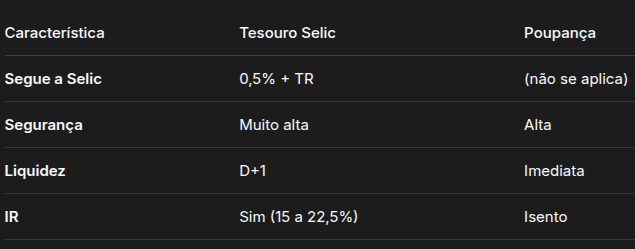

O que é o Tesouro Selic?
- É um título público do Tesouro Direto
- Seu rendimento acompanha a taxa básica de juros do Brasil (Selic)
- É considerado o investimento mais seguro do país
Para que serve?
- Ideal para reserva de emergência
- Indicado para objetivos de curto prazo (até 2 anos)
- Protege o dinheiro da inflação.
- Segurança: Risco muito baixo (Governo Federal).
- Liquidez: pode resgatar a qualquer momento (em D+1).
- Rentabilidade: rende mais que a poupança na maioria das vezes.
- Isenção de taxa de custódia para saldo até R$ 10.000,00.
Desvantagens
- Imposto de Renda (regressivo: 22,5% a 15%)
- Demora 1 dia útil para o dinheiro cair na conta
- Valor mínimo de investimento (cerca de R$ 30,00)
Como investir
- Abrir conta em uma corretora ou banco (gratuito)
- Acessar o Tesouro Direto
- Comprar o título “Tesouro Selic 2029” (ou outro vencimento)
- Acompanhar pelo aplicativo
Tesouro Selic VS Poupança (Comparação Simples)

Conclusão Básica
- Tesouro Selic é melhor que poupança para deixar dinheiro por alguns meses ou anos
- A poupança só ganha se o dinheiro for resgatado com poucos dias ou se o valor for muito baixo.